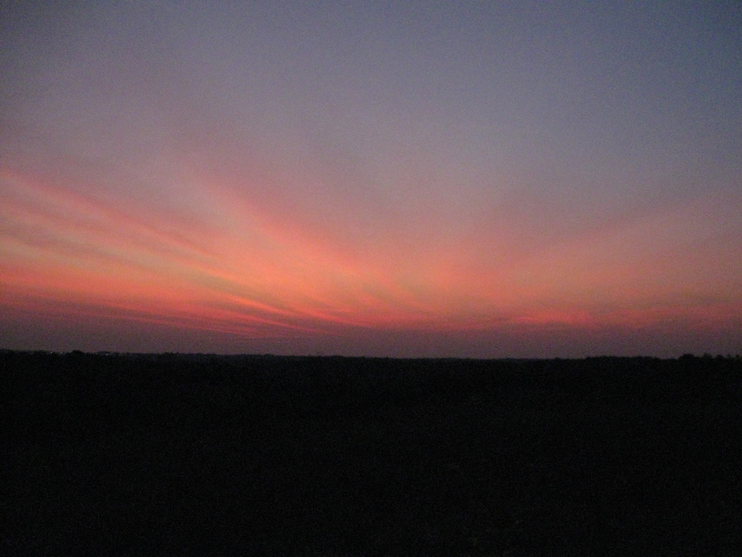
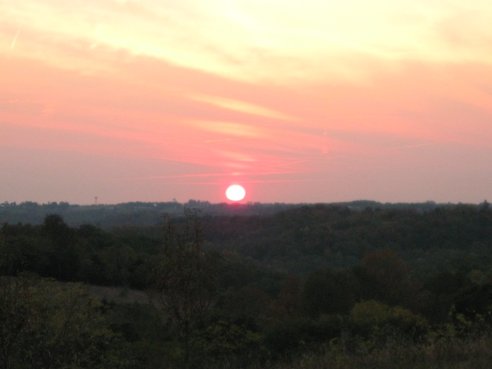

7 Oct 08, Clifty Falls State Park, Madison, IN
I knew my perfect weather couldn't last. This afternoon—as I raced to reach a bridge across the Ohio before rush hour—I first hit headwinds, then rain. I was riding in what could be described as miserable conditions—narrow, busy road, headwinds, rain, poor visibility—but I wasn't deterred, and I was far from miserable. I reached the bridge right at 5 o'clock, and started over in what appeared to be a nice gap in traffic. Of course, not much later I had a semi behind me. It ended up being fine—he gave me space, and he was going pretty slowly himself up the first half of the bridge. I went into a full sprint, nonetheless, and when I got down to the other side—and Indiana—I pulled into a parking lot to catch my breath & eat & drink. In Madison, IN, I was disappointed to find that most of the interesting family restaurants along the main street were only open for lunch. I did find a bar/grill type place with local art on the walls & a good selection of music called Joeyg's. I had a cheeseburger & a beer and it was superb—of course, my condition might have biased me. After I left, and set to race the sunset to a campground, I knew I had a big climb to expect. It's funny, though, because the hills seem to be gettingg smaller. Granted, this one might not have been as steep, but I got to the top thinking I hadn't really started the bulk of the climb yet. Talk about a pleasant surprise. Now I'm camping in Clifty State Park, which is beautiful.
Awoken at 10:30 & told to move.

